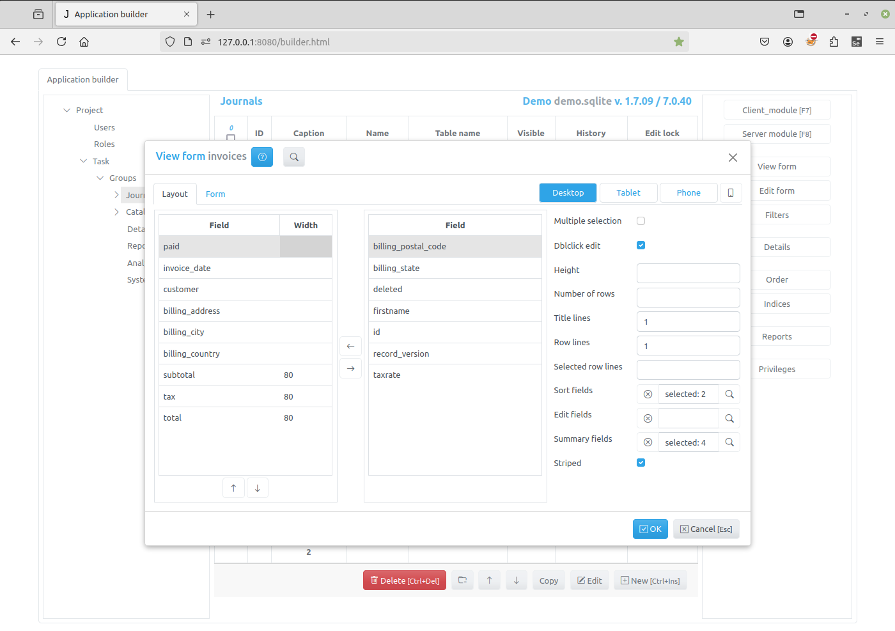
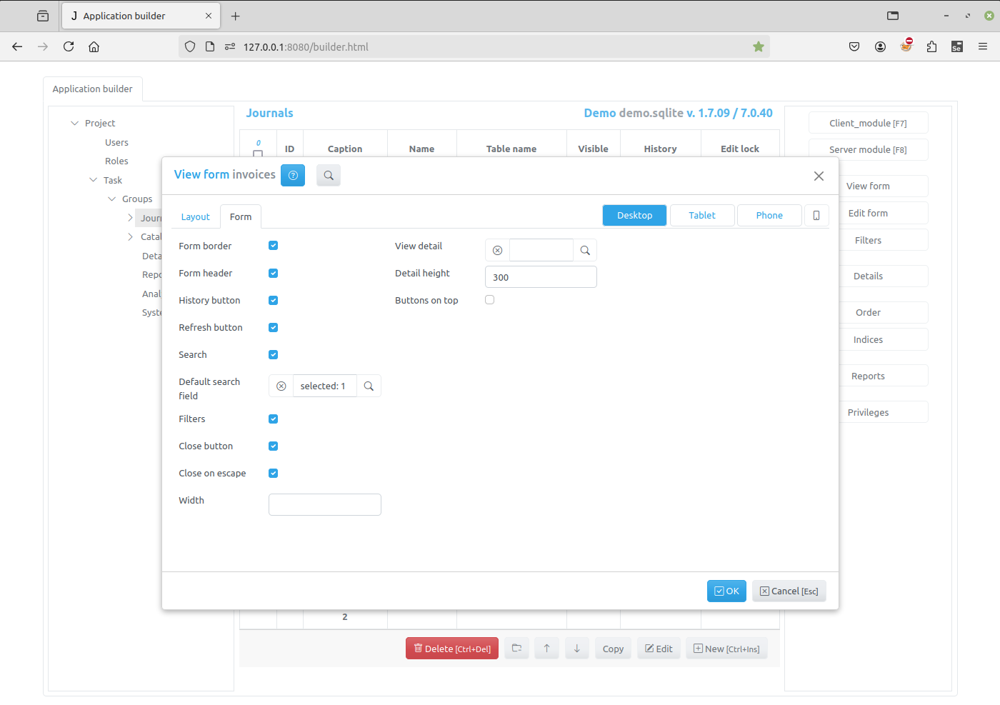

View Form Dialog¶
The View Form Dialog opens when a developer selects the item in the Application builder and clicks the View Form button.
It has two tabs Layout and Form, as well as button Desktop and device.
The button Desktop is a default and a device can be used for tablet and/or
mobile phone inclusion. Each option is independent to each other.
Layout tab¶
On the Layout tab, you can specify how the table is displayed in the view form of the item.
Setting table fields¶
The Layout tab has two lists of fields. The left list contains the fields that were selected be displayed in the table. In the right list there are available fields that you can select.
To select a field, select it in the right list and use the Left arrow button in the center or press Space key on a keyboard.
To unselect a field, select it in the left list and use the Right arrow button in the center or press Space key on a keyboard.
To order the selected fields use the buttons that located below left list.
You can specify the width of the selected columns. To do this, select the field
and enter its width in the Width column. The value can be specified in any
supported CSS unit, for example, in pixels - px, in percentage, relative to
the parent element - %. The width specified as an integer value is
interpreted as the width specified in pixels.
Examples of column width values:
100px
100
50%
2cm
Setting table options¶
On the right side of the “Layout” tab are the controls that you can use to specify the options of the table displayed in the view form:
Multiple selection - if set, a leftmost column with check-boxes will be created to select records. So, that when a user clicks on the check-box, the value of the primary key field of the record will be added to or deleted from the selections attribute.
Dblclick edit - if set, the edit form will be displayed when the user double-clicks on the table row.
Number of rows - an integer number, if set, specifies the number of rows displayed by the table, otherwise, if Height is not specified, the application calculates the height of the table, based on the page height
Height - an integer number, if set, specifies the height of the table in pixels, otherwise , if Number of rows is not specified, the application calculates the height of the table, based on the page height
Row lines - an integer, specifying the number of lines of text displayed in a table row, if it is 0, the height of the row is determined by the contents of the row cells
Selected row lines - an integer value, if Row lines is set and this value is greater that 0, it specifies the minimal number of lines of text displayed in the selected row of the table
Freeze columns - an integer, if it is greater than 0, it specifies number of first columns that become frozen - they will not scroll when the table is scrolled horizontally.
Sort fields - click the button to the right of the input field to open the list of fields and select the fields by which you can sort the contents of the table by clicking in the corresponding column header of the table.
Summary fields - click the button to the right of the input field to open the list of fields and the fields for which the summary will be calculated and displayed in the corresponding column footer. For for numeric fields sums will be calculated, for not numeric fields - the number of records.
You can get or change these values programmatically on the client by using the table_options attribute of the item
Form tab¶
On this tab are the controls that you can use to specify the options of the view form
Form border - if set, the border will be displayed around the form
Form header - if set, the form header will be created and displayed containing form title and various buttons
History - if set and saving change history is enabled, the history button will be displayed in the form header
Refresh button - if set, the refresh button will be created in the form header, that will allow users to refresh the page
Search - if set, the search input will be created in the form header
Default search field - click the button to the right of the input field to select a default search field
Filters - if set and there are visible filters, the filter button will be created in the form header
Close button - if set, the close button will be created in the upper-right corner of the form
Close on escape - - if set, pressing on the Escape key will close the form
Width - an integer, the width of the modal form, if not set the value is 600 px
View details - click the button to the right of the input field to select details, that will be displayed in the view form
Detail height - an integer, the height of the details displayed in the view form, if not set, the height of the detail table is 232px
Buttons on top - if this check box is checked the buttons are displayed on the top of the view form, when form has a default form template
You can get or change these values programmatically on the client by using the view_options attribute of the item
Click the OK button to save to result or Cancel to cancel the operation. After saving, you can see the changes by refreshing the project page.